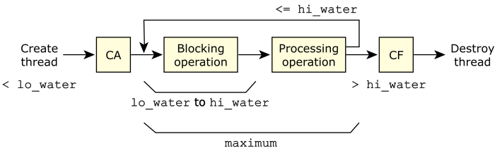

Let's first look at the thread pool parameters
to see how you control
the number and attributes of threads that will be operating in this thread pool.
Keep in mind that we'll be talking about the blocking operation
and the processing operation
(when we look at the callout functions,
we'll see how these relate to each other).
The following diagram illustrates the relationship of the lo_water, hi_water, and maximum parameters:

Note that CA
is the context_alloc() function,
CF
is the context_free() function,
blocking operation
is the block_func() function, and
processing operation
is the handler_func().
The thread attributes structure). You'll recall that structure controls things about the newly created thread like priority, stack size, and so on.
create thread.
burstsof requests, then you might decide that once you've dropped below lo_water blocking operation threads, you're probably going to encounter this
burstof requests, so you might decide to request the creation of more than one thread at a time.
splitout of the
processing operationblock, with one path going to the
blocking operationand the other path going to
CFto destroy the thread. The combination of lo_water and hi_water, therefore, allows you to specify a range indicating how many threads should be in the blocking operation.
Another key parameter to controlling the threads is the flags parameter passed to the thread_pool_create() function. It can have one of the following values:
Error handlingfor details.
Error handlingfor details.
If neither POOL_FLAG_EXIT_SELF nor POOL_FLAG_USE_SELF is set, the thread_pool_start() function will return, with new threads being created as required.
The above descriptions may seem a little dry. Let's look at an example.
/*
* part of tp1.c
*/
#include <sys/dispatch.h>
int main()
{
thread_pool_attr_t tp_attr;
void *tpp;
...
tp_attr.lo_water = 3;
tp_attr.increment = 2;
tp_attr.hi_water = 7;
tp_attr.maximum = 10;
...
tpp = thread_pool_create (&tp_attr, POOL_FLAG_USE_SELF);
if (tpp == NULL) {
fprintf (stderr, "%s: can't thread_pool_create, errno %s\n",
progname, strerror (errno));
exit (EXIT_FAILURE);
}
thread_pool_start (tpp);
...
}
After setting the members, we call thread_pool_create() to create a thread pool. This returns a pointer to a thread pool control structure (tpp), which we check against NULL (which would indicate an error). Finally we call thread_pool_start() with the tpp thread pool control structure.
I've specified POOL_FLAG_USE_SELF which means that the thread that called thread_pool_start() will be considered an available thread for the thread pool. So, at this point, there is only that one thread in the thread pool library. Since we have a lo_water value of 3, the library immediately creates increment number of threads (2 in this case). At this point, 3 threads are in the library, and all 3 of them are in the blocking operation. The lo_water condition is satisfied, because there are at least that number of threads in the blocking operation; the hi_water condition is satisfied, because there are less than that number of threads in the blocking operation; and finally, the maximum condition is satisfied as well, because we don't have more than that number of threads in the thread pool library.
Now, one of the threads in the blocking operation unblocks (e.g., in a server application, a message was received). This means that now one of the three threads is now in the processing operation instead of the blocking one. Since the count of blocking threads is less than lo_water, it trips the lo_water trigger and causes the library to create increment (2) threads. So now there are 5 threads total (4 in the blocking operation, and 1 in the processing operation).
More threads unblock.
Let's assume that none of the threads in the processing operation
completes any of their requests yet.
Here's a table illustrating this, starting at the initial state (we've used
Proc Op
for the processing operation, and Blk Op
for the blocking
operation, as we did in the previous diagram, Thread flow when using thread
pools.
):
| Event | Proc Op | Blk Op | Total |
|---|---|---|---|
| Initial | 0 | 1 | 1 |
| lo_water trip | 0 | 3 | 3 |
| Unblock | 1 | 2 | 3 |
| lo_water trip | 1 | 4 | 5 |
| Unblock | 2 | 3 | 5 |
| Unblock | 3 | 2 | 5 |
| lo_water trip | 3 | 4 | 7 |
| Unblock | 4 | 3 | 7 |
| Unblock | 5 | 2 | 7 |
| lo_water trip | 5 | 4 | 9 |
| Unblock | 6 | 3 | 9 |
| Unblock | 7 | 2 | 9 |
| lo_water trip | 7 | 3 | 10 |
| Unblock | 8 | 2 | 10 |
| Unblock | 9 | 1 | 10 |
| Unblock | 10 | 0 | 10 |
As you can see, the library always checks the lo_water
variable and creates increment threads at a time until
it hits the limit of the maximum variable (as it did when the
Total
column reached 10—no more threads were being created,
even though the count had underflowed the lo_water) value.
This means that at this point, there are no more threads waiting in the blocking operation. Let's assume that the threads are now finishing their requests (from the processing operation); watch what happens with the hi_water trigger:
| Event | Proc Op | Blk Op | Total |
|---|---|---|---|
| Completion | 9 | 1 | 10 |
| Completion | 8 | 2 | 10 |
| Completion | 7 | 3 | 10 |
| Completion | 6 | 4 | 10 |
| Completion | 5 | 5 | 10 |
| Completion | 4 | 6 | 10 |
| Completion | 3 | 7 | 10 |
| Completion | 2 | 8 | 10 |
| hi_water trip | 2 | 7 | 9 |
| Completion | 1 | 8 | 9 |
| hi_water trip | 1 | 7 | 8 |
| Completion | 0 | 8 | 8 |
| hi_water trip | 0 | 7 | 7 |
Notice how nothing really happened during the completion of processing for
the threads until we tripped over the hi_water
trigger.
The implementation is that as soon as the thread finishes, it looks at the
number of receive blocked threads and decides to kill itself if there are too
many (i.e., more than hi_water) waiting at that point.
The nice thing about the lo_water and
hi_water limits in the structures is that you can effectively
have an operating range
where a sufficient number of threads are
available, and you're not unnecessarily creating and destroying threads.
In our case, after the operations performed by the above tables, we now have
a system that can handle up to 4 requests simultaneously without creating
more threads (7 - 4 = 3, which is the lo_water trip).